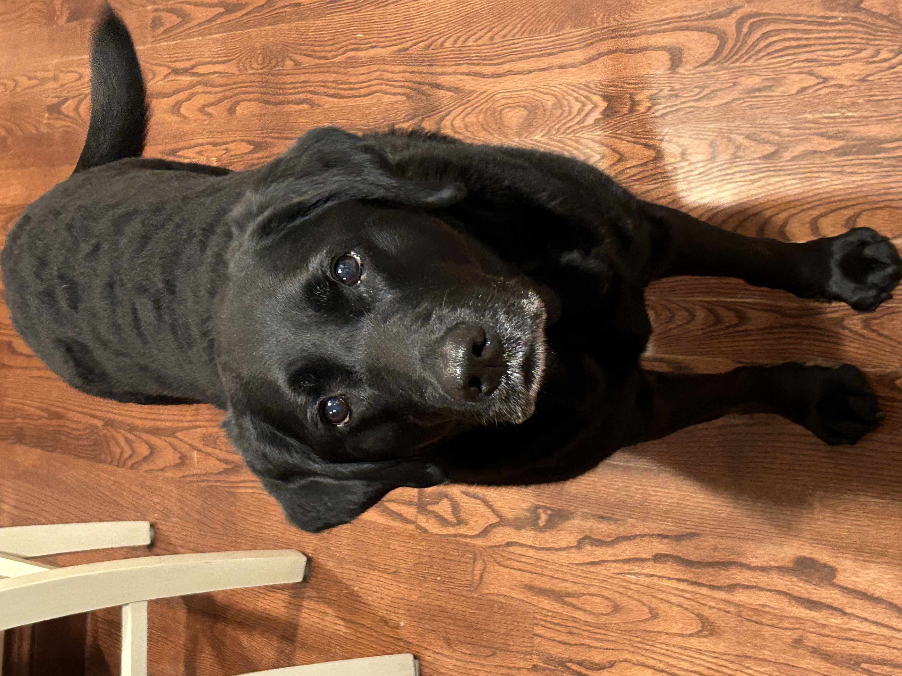

Hobbies and Interests
In my free time I enjoy hanging out with friends, cooking, going to the gym, rock climbing, tennis, and spending time outdoors, including walking, running, golfing, and hiking with my two dogs, Sake (left) and Lulu (right).


I have been keeping track of my golf scores for the last few years. The interactive plot below shows I'm improving, although it sometimes doesn't feel like it 😒.